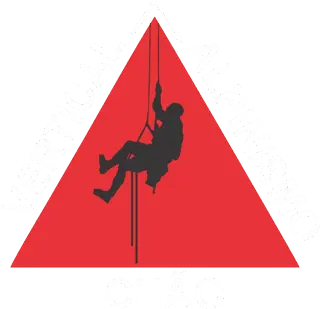
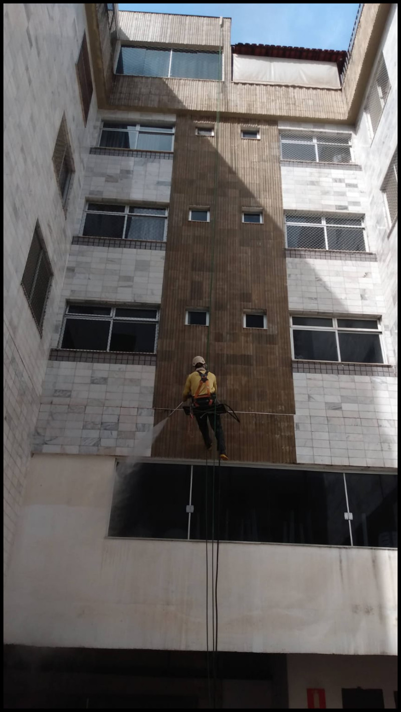
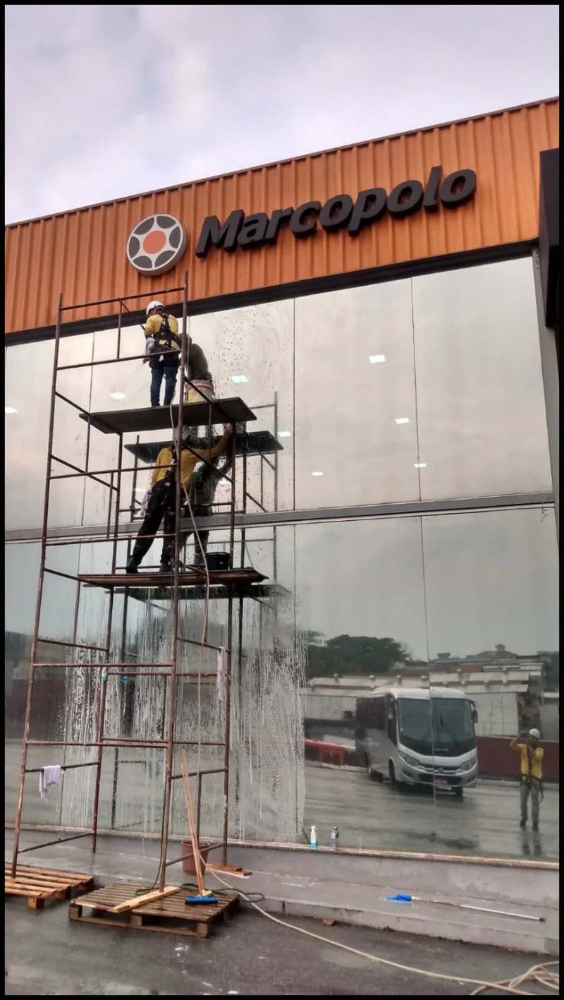
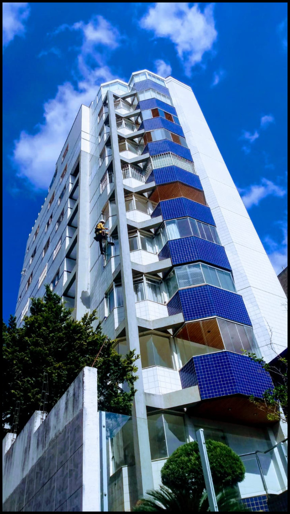
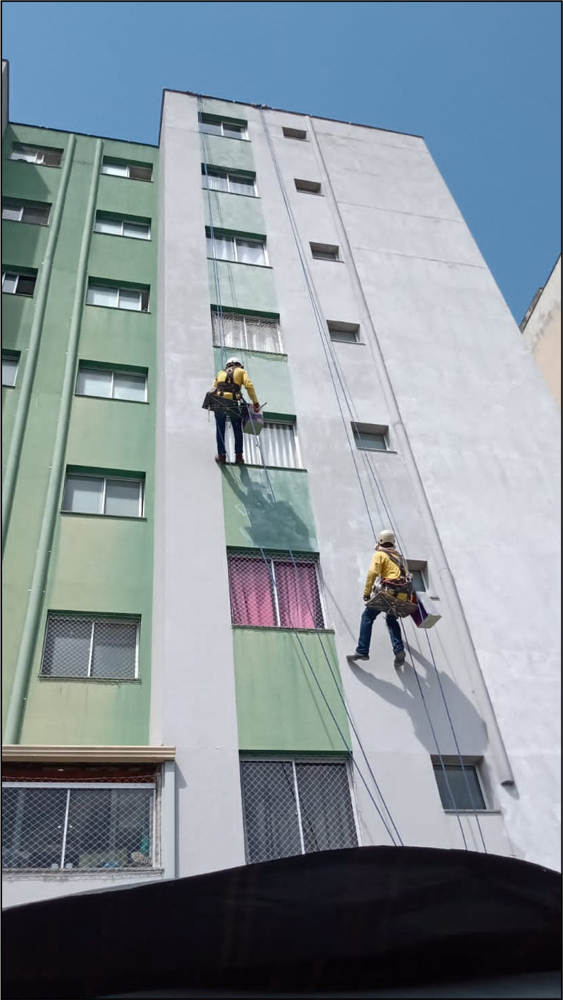
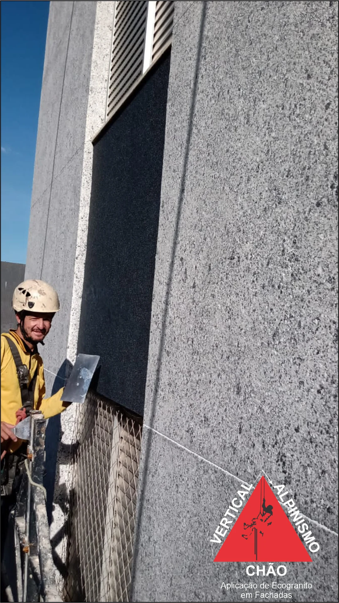
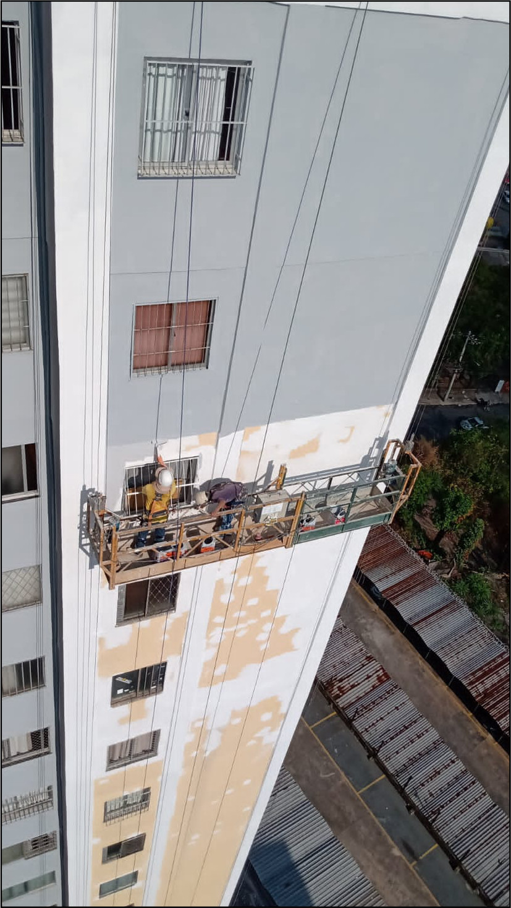
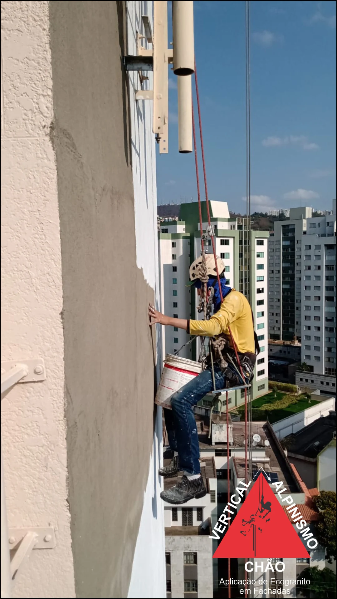
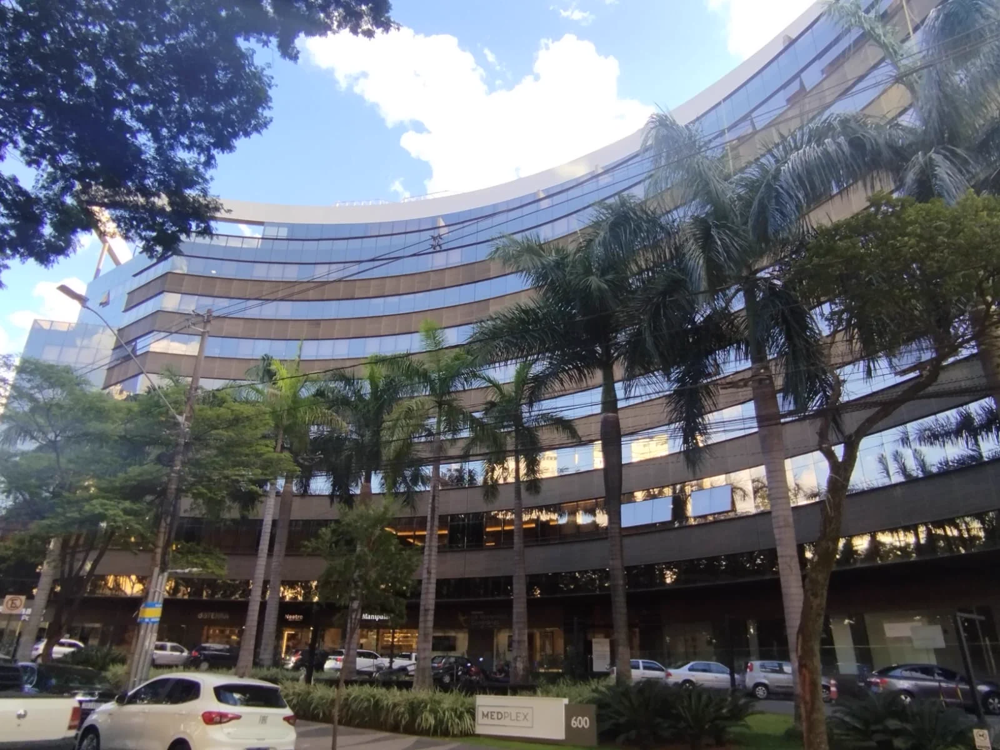

Segurança no trabalho
Equipe registrada, equipada e treinada para serviços em altura.

Vertical Chão Alpinismo industrial
Reforma predial e serviços em altura
Fachadas limpas, pintadas, impermeabilizadas e seguras, com equipe certificada para trabalhar onde andaime vira custo e atraso.
Equipe registrada, equipada e treinada para serviços em altura.
Rotina limpa, acompanhamento técnico e menos transtorno para moradores.
Execução planejada para condomínios, síndicos e administradoras.
Materiais adequados, inspeção de fachada e cuidado com detalhes.
A Vertical Chão atua há mais de 20 anos na reforma de fachadas de edifícios residenciais e comerciais em Minas Gerais. O trabalho por alpinismo industrial permite acessar áreas difíceis com segurança, agilidade e menos interferência na rotina do condomínio.
A equipe reúne profissionais registrados, treinamentos em NR35, NR18, NR12 e NR6, seguro de vida, uniforme completo e acompanhamento técnico em cada etapa. A empresa também é credenciada para aplicação de EcoGranito.
Da inspeção ao acabamento, a Vertical Chão cuida das etapas críticas para recuperar, proteger e valorizar o prédio.
Correções, recuperação visual e manutenção preventiva para condomínios.
Remoção de sujeira, manchas e resíduos com acesso por corda.
Tratamento de áreas com desplacamento e risco de queda.
Preparação, correção e pintura para renovar a proteção externa.
Criação e reparo para reduzir infiltrações e movimentações indevidas.
Correções em pontos deteriorados antes que o dano avance.
Proteção de fachadas contra água, infiltrações e desgaste.
Inspeção técnica, reposição de rejuntes e orientação para manutenção.
Identificação de revestimentos soltos antes de acidentes.
Vistoria de fachada com registro e encaminhamento técnico.
Aplicação com padrão de acabamento e parceria com fabricante.
Remoção de manchas e resíduos em vidros, inclusive em áreas de difícil acesso.

Limpeza de fachadas e vidros
Removemos sujeira, manchas, poluição e resíduos acumulados em fachadas e vidros, utilizando alpinismo industrial para alcançar áreas de difícil acesso com segurança e eficiência.
+20 anos de experiência | Equipe treinada | Atendimento em toda a Grande BH
Solicite uma avaliação gratuita
Reposição de pastilhas
O desplacamento compromete proteção, aparência e segurança. A Vertical Chão localiza os pontos críticos e executa o reparo com técnica para evitar improvisos em altura.
Falar com atendimento
Pintura de fachadas
A pintura de uma fachada vai muito além da estética. Realizamos a preparação completa das superfícies, correção de fissuras, trincas e áreas deterioradas e aplicação de tinta emborrachada impermeabilizante, proporcionando acabamento, proteção e maior resistência à ação da chuva e do tempo.
Execução profissional com alpinismo industrial, segurança e qualidade em cada etapa.
Orçar pintura de fachada →
Aplicação de Ecogranito
Proteção, renovação e acabamento de alto padrão para fachadas e superfícies em pedra.
A Vertical Alpinismo é empresa credenciada EcoGranito e especializada na aplicação do produto EcoGranito, realizando o serviço com mão de obra qualificada e técnicas adequadas para cada tipo de superfície.
Quero esse acabamentoLimpeza, manutenção, pintura e recuperação de revestimentos. Toque nas fotos para ver cada serviço de perto.



"Foi a melhor escolha que fizemos. A empresa executou o serviço com perfeição, sem transtorno, mantendo a obra limpa e organizada todos os dias."
Valéria Moreira, síndica do Edifício Parque dos Pioneiros
"A equipe é completa, com equipamento de segurança, conhecimento de obra e acabamento em estruturas horizontais e verticais."
Luiz Augusto, síndico do Condomínio Edifício Jardim Suíço
"Trabalham com segurança, proteções adequadas e entregam serviço de ótima qualidade. Para obra ou manutenção do condomínio, vale muito a pena."
Idalécio Gomes, administrador do Centro Empresarial Raja Gabaglia 1001
Orçamento e atendimento
Envie sua solicitação ao atendimento comercial. Nossa equipe responderá pelo e-mail que você informar.